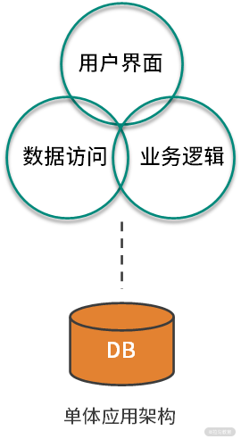

- 00 开篇词 既往不恋，当下不杂，未来不迎.md.html
- 01 微服务架构有哪些特点？.md.html
- 02 微服务架构下的质量挑战.md.html
- 03 微服务架构下的测试策略.md.html
- 04 单元测试：怎样提升最小可测试单元的质量？.md.html
- 05 集成测试：如何进行微服务的集成测试？.md.html
- 06 组件测试：如何保证单服务的质量？.md.html
- 07 契约测试：如何进行消费者驱动的契约测试？.md.html
- 08 端到端测试：站在用户视角验证整个系统.md.html
- 09 微服务架构下的质量保障体系全景概览.md.html
- 10 流程规范篇：高速迭代的研发过程需要怎样的规范？.md.html
- 11 测试技术篇：测试技术这么多，我该如何选型？.md.html
- 12 测试技术篇：如何提升测试效率？.md.html
- 13 测试技术篇：专项测试技术解决了哪些专项问题？.md.html
- 14 CICD 篇：如何更好地利用多个“测试”环境？.md.html
- 15 CICD 篇：如何构建持续交付工具链？.md.html
- 16 度量与运营篇：如何做好质量和效率的度量与运营？.md.html
- 17 度量与运营篇：如何度量与运营效率和价值？.md.html
- 18 组织保障篇：质量是设计出来的.md.html
- 19 软件测试新趋势探讨.md.html
- 20 结束语 QA 如何打造自身的核心竞争力？.md.html
- 捐赠
01 微服务架构有哪些特点？
作为测试从业者，想要做好微服务的质量保障，就需要对它产生的由来和特点有一个充分的认识，带着问题去理解它的特性，这样学习的思路就会很清晰。正所谓，知己知彼，百战百胜。希望通过本课时的内容，能够让你理解微服务架构，为保障微服务的质量打下一定的理论基础。
首先，我以我自身的两份工作经历，来让你感受下什么是微服务，以及微服务架构的优缺点。这样有利于你理解后面的课时内容，同时更加有代入感。
单体应用架构下的服务特性
我第一份工作是网络游戏的测试保障工作，在功能测试之外做了很多服务端相关的工作，如编译后分发、配置、部署、发布等。那时候的服务端应用程序是几个独立的几十兆、上百兆的文件。每个文件是一个可执行文件，包含一个系统的所有功能，这些功能被打包成一体化的文件，几乎没有外部依赖，可以独立部署在装有 Linux 系统的硬件服务器上。 这种应用程序通常被称为单体应用，单体应用的架构方法论，就是单体应用架构（Monolithic Architecture）。单体应用架构下，一个服务中包含了与用户交互的部分、业务逻辑处理层和数据访问层。如果存在数据库交互则与数据库直连，如下图所示。

单体应用架构下，一个服务中，两个业务模块作为该服务的一部分存在同一进程中，它们通过方法调用的方式进行通信，如下图所示。

通过在单体应用架构下，不同阶段的服务端相关工作，可以感知到单体应用的特性。
1. 日常研发测试阶段
- 编译：完整编译一次需要 30 到 60 分钟不等，所以一般会限制编译时间，如晚上和午休各一次；
- 分发：编译完成后，在内网远程复制分发给不同的团队，一般是研发和测试人员；
- 部署：内网部署较简单，先将服务端文件复制到服务器本地目录，关闭运行中的服务器程序，将新服务器文件覆盖至运行目录，再启动服务器程序即可。
2. 对外发布阶段
服务器在线上进行发布时的操作与内网类似，但每一步会比内网更加严格。受制于公网速度和线上运行的服务器个数，更新服务器需要几个小时，且更新期间服务不可用，因此每次发布计划需要花费研发和测试团队的大量时间。为了确保应用程序不会由于新发布的功能而中断服务，研发团队和运营团队会达成共识，极大减少更新的频次，比如两周左右停服更新一次，除非有特别严重的 Bug 需要修复。
3. 线上运维阶段
因为所有的功能集中在少数的几个服务端文件中，一个 Bug 可能导致某个服务端文件产生崩溃，进而影响服务的使用。在线上运维过程中如果出现性能瓶颈，也不能单独对热点模块进行扩容，只好针对该热点模块所在的服务端文件进行整体的扩容。
4. 其他阶段
服务端的技术栈是在立项时的技术调研阶段，经过慎重评估后选定的。它是一种平衡的技术栈，可以很好地满足所有需求，因此每个团队成员都必须使用相同的开发语言、持久化存储及消息系统。
另外，随着时间的推移、需求的变更和技术人员的更替，服务应用中会形成许多技术债务。因为我完整经历了那个项目，期间经历了多次大规模的“重构”，每次重构对整个项目的人员来说都是“灾难”，但又不得不进行。由于只有几个单独的可执行文件，所以项目文件包含了太多模块，这也使得整个项目非常复杂，每次修改代码就需要非常小心，因为太容易引入新的 Bug 了。
现在应用程序日益复杂化，项目对于迭代速度的要求也越来越高，上述的不足会暴露得更加明显，在这种时代背景下，微服务架构开始在企业生根发芽。
微服务架构下的服务特性
后来我转到了互联网公司工作，所在项目的服务架构与过去经历过的单体应用架构下的服务差异巨大。同等规模的研发团队，服务的个数竟然有近百个，虽然数量众多，但每个服务都只负责一小块儿具体的业务功能，能独立地部署到环境中，服务间边界相对清晰，相互间通过轻量级的接口调用或消息队列进行通信，为用户提供最终价值。这样的服务称为微服务（Microservice）。 从本质上来说，微服务是一种架构模式，是面向服务型架构（SOA）的一种变体，如下图所示。

上图所示，微服务架构下，业务逻辑层被分拆成不同的微服务，其中不需要与数据库交互的服务将不再与数据库连接，需要与数据库交互的服务则直接与数据库连接。
微服务架构下，因为两个服务分别在自己的进程中，所以它们不能通过方法调用进行通信，而是通过远程调用的方式进行通信，如下图所示。

同样，通过在微服务架构下，不同阶段的服务端相关工作，可以感知到微服务的特性。
1. 日常研发测试阶段
因为微服务数量众多，研发和测试团队都有诉求构建一个良好的基础建设。如搭建持续交付工具，通过持续交付工具拉取某微服务代码，再进行编译、分发、部署到测试环境的机器上。再加上，微服务应用程序本身并不大，部署耗时短、影响范围小、风险低，整个编译分发部署的过程在几分钟之内就可以搞定，且几乎是自动完成，因此部署频率可以做到很高。
2. 对外发布阶段
每次功能的变更或缺陷的修复，在接口不变的情况下，不会影响整个应用的使用。即使某个微服务应用出现缺陷，在事先做好熔断机制的情况下，不会导致整个应用的崩溃，这无疑增加了应用整体的可靠性。再加上部署效率高的特点，一个微服务每天可以发布数次，使得用户能快速感受到新特性和产品价值。
3. 线上运维阶段
在线上运维过程中，如果出现了性能瓶颈，只需对热点服务进行线性扩容。如果某服务的服务器资源利用率不高，可以对其进行线性缩容，这都极大提升了资源利用率。
4. 其他阶段
架构设计方面，微服务可以使用不同的语言，采用不同的架构，部署到不同的环境。同时可以采用适合微服务业务场景的技术，来构建合理的微服务模块。
由此可见，微服务的确解决了单体应用架构下服务的诸多短板。单体应用与微服务对比总结如下。

微服务的缺点
当然，事物都有两面性，任何一项技术都不可能十全十美，在解决一定问题的同时，也会引入新的问题。 那么，微服务架构下服务有哪些缺点呢？
从微服务架构设计角度来看。
- 分布式特性：微服务系统通常也是分布式系统，那么在系统容错、网络延迟、分布式事务等方面容易产生各类问题，这也需要投入较多的人力物力去应对。
- 技术栈多样性：不同的组件选择不同的技术栈，会导致应用程序设计和体系结构不一致的问题，一定程度上也会产生额外的维护成本。
- Dev-Ops：微服务架构下需要有一个成熟的 DevOps 团队来处理维护基于微服务的应用程序所涉及的复杂性，同时还需要配备相应的工具。
- 网络的可靠性：独立运行的微服务使用网络进行交互，这需要可靠且快速的网络连接，同时还需要避免服务间的网络通信存在安全漏洞。
从微服务数量规模角度来看。
- 线上运维方面：更多的服务意味着要投入更多的运维人力和物力，如服务器硬件资源、运行时容器、数据存储和带宽成本、人力维护成本、线上监控成本等。
- 团队协作成本：微服务之间主要通过接口进行通信，当修改某一个微服务的接口时，所有用到这个接口的微服务都需要进行调整，当核心接口调整时，工作量更为显著。
- 团队沟通成本：为了确保一个团队的服务发生更新时，不会破坏另一个团队的功能，就需要相关团队进行大量的沟通、确认工作。
总结
说了这么多，我想使用两个类比，帮助你简单理解微服务架构和单体应用架构的差异：微服务架构更像是活字印刷，单体应用更像是刻版印刷。
本课时通过我两份工作中的实际项目情况，带你领略了单体应用项目和微服务项目的工作日程，以及微服务架构下服务的优缺点。那么针对微服务的诸多特点，会给软件质量保障工作带来怎样的挑战，我将在下一课时中详细介绍。
你是否接触过微服务架构的项目和服务？如果有，欢迎在留言区评论，说说它们有哪些特点，以及这样的特点对你的测试工作带来了哪些困扰和影响？ 同时欢迎你把这篇文章分享给你的同学、朋友和同事，大家共同探讨。
参考资料
单体应用架构：https://microservices.io/patterns/cn/monolithic.html 面向服务型架构（SOA）：https://zh.wikipedia.org/wiki/%E9%9D%A2%E5%90%91%E6%9C%8D%E5%8A%A1%E7%9A%84%E4%BD%93%E7%B3%BB%E7%BB%93%E6%9E%84 微服务架构：https://microservices.io/patterns/cn/microservices.html
© 2019 - 2023 Liangliang Lee. Powered by gin and hexo-theme-book.